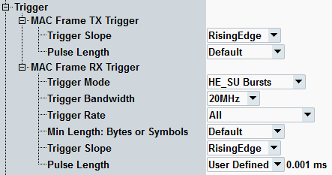
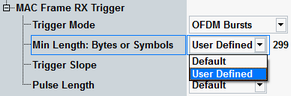
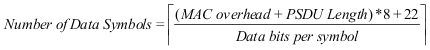

The "Trigger" parameters configure the trigger signals generated by the WLAN signaling application. The trigger signals can be used "internally" to trigger a measurement application or "externally" to synchronize external devices to the WLAN signal.
See also "General Description".

This node configures the TX frame trigger signal. It is aligned to the start of the downlink MAC frames.
To address this trigger signal in remote commands of other applications, use the string "WLAN Sig<i>: FrameTrigger", with <i> replaced by the instance number of the signaling application.
Aligns either the rising edge or the falling edge of the trigger pulses with the start of the MAC frames.
Changing the "Trigger Slope" changes the polarity of the trigger signal.
Remote command:Configures the length of the trigger pulses.
"Default" | The pulse duration is 1 μs. |
"Burst Length" | The pulse length equals the burst length. |
"User Defined" | You can specify a pulse length. |
This node configures the RX frame trigger signal. It is aligned to the start of the uplink MAC frames.
To address this trigger signal in remote commands of other applications, use the string "WLAN Sig<i>: RXFrameTrigger", with <i> replaced by the instance number of the signaling application.
Defines for which bursts a trigger pulse is generated.
Note that the trigger pulse is generated only for bursts matching the specified "Trigger Bandwidth" and "Trigger Rate".
"All Bursts" | All received bursts result in an RX frame trigger pulse. There is no minimum length. Even ACK bursts result in a trigger pulse. |
"OFDM Bursts" | Only OFDM bursts with the configured minimum length result in an RX frame trigger pulse. This mode remains for backward compatibility. Use rather modes with the burst type specification (e.g. "VHT Bursts"). |
"DSSS/CCK Bursts" | Only DSSS/CCK bursts with the configured minimum length result in an RX frame trigger pulse. |
"Non-HT/HT/ VHT/HE Bursts" | Only particular bursts with the configured minimum length result in an RX frame trigger pulse. These values are only supported by an SUA. |
Defines for which bandwidth of received bursts a trigger pulse is generated for the RX frame trigger signal.
Remote command:Defines for which rate of received bursts a trigger pulse is generated for the RX frame trigger signal.
Remote command:This setting is displayed for all trigger modes except "All Bursts". It defines the number of symbols/bytes that need to be received before the trigger event is generated.

"Default" minimal length is usually appropriate for standards IEEE 802.11a, g, n, and ac 20 MHz. This mode uses a suitable minimum length, so that ACK bursts do not result in a trigger pulse.
With "User Defined", you can set the minimum number of symbols/bytes manually.
If you want to set a user-defined minimum length for OFDM, you can use the following formula to calculate the number of symbols from signal properties.

Where "MAC overhead" is 66 (bytes) and "PSDU Length" is the payload length in bytes. The value of "Data bits per symbol" (NDBPS) depends on the active transmission scheme, as given in the following table.
Data rate in Mbit/s | NDBPS (20 MHz) 11a/g | MCS | NDBPS (20 MHz) 11n, 11ac | NDBPS (40 MHz) 11n, 11ac | NDBPS (80 MHz) 11ac | NDBPS (160 MHz) 11ac | |
|---|---|---|---|---|---|---|---|
6 | 24 | MCS 0 | 26 | 54 | 117 | 234 | |
9 | 36 | MCS 1 | 52 | 108 | 234 | 468 | |
12 | 48 | MCS 2 | 78 | 162 | 351 | 702 | |
18 | 72 | MCS 3 | 104 | 216 | 468 | 936 | |
24 | 96 | MCS 4 | 156 | 324 | 702 | 1404 | |
36 | 144 | MCS 5 | 208 | 432 | 936 | 1872 | |
48 | 192 | MCS 6 | 234 | 486 | 1053 | 2106 | |
54 | 216 | MCS 7 | 260 | 540 | 1170 | 2340 | |
MCS 8* | 312 | 648 | 1404 | 2808 | |||
MCS 9* | - | 720 | 1560 | 3120 | |||
* only relevant for IEEE 802.11ac | |||||||
- 19.5 Parameters for HT MCSs
- 21.5 Parameters for VHT-MCSs
For the NDBPS values for HE, refer to IEEE P802.11ax, section 28.5 Parameters for HE-MCSs.
For 20 MHz channel and with a payload length of 500 bytes, in 11n MCS 7 the number of data symbols would be ⌈((66+500)*8 + 22)/260⌉ = 18.
Aligns either the rising edge or the falling edge of the trigger pulses with the start of the MAC frames.
Changing the "Trigger Slope" changes the polarity of the trigger signal.
Remote command:Configures the length of the trigger pulses.
"Default" | The pulse duration is 1 μs. |
"User Defined" | You can specify a pulse length. |